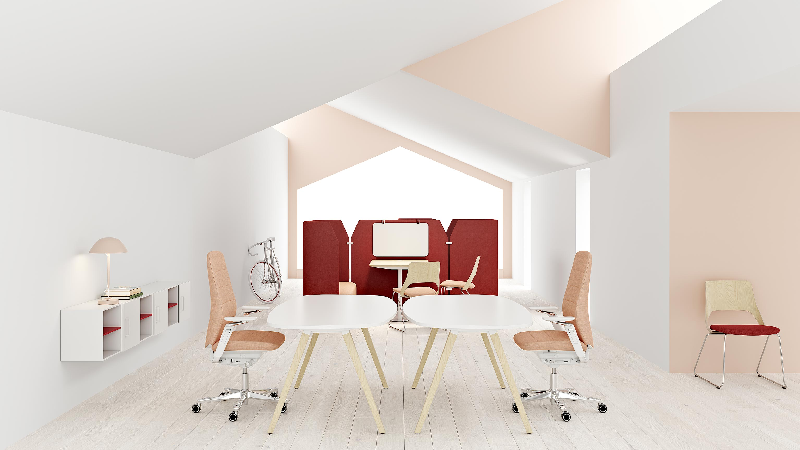
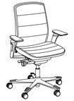
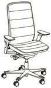
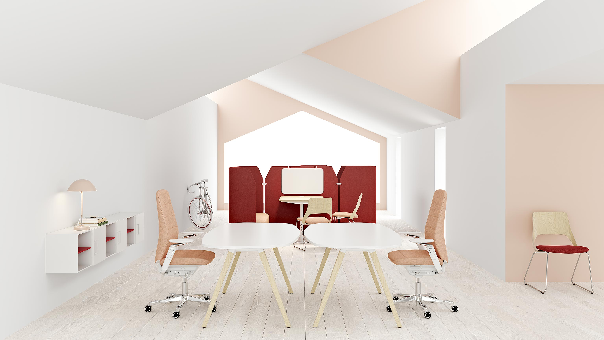
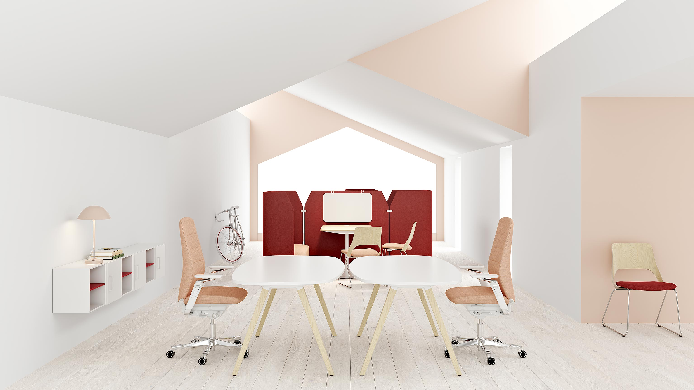

75 år av erfarenhet. En stol. Vi har lagt in all vår kunskap i Capella.
Den främjar aktivt sittande och erbjuder det bästa inom funktion, estetik
och välbefinnande.
Läs mer
Capella är en ny typ av arbetsstol. Skapad för att få din kropp i rörelse. Att sitta rätt handlar nämligen om att röra på sig. Kärnan i Capella är den
nyutvecklade innovativa FreeMotion-mekanismen. Den ger välbalanserade mikrorörelser i sitsen och ett aktivt sittande. Allt för att du ska må bra.
Med sina unika egenskaper sammanfattar Capella allt det som vi på Kinnarps vet är viktigast för en arbetsstol. Du sitter bekvämt och ergonomiskt korrekt.
Och har många inställningsmöjligheter för att du ska hitta din optimala sittställning. Med de intuitiva reglagen gör du även enkelt stolen till din egen.
Capella är tilltalande och väldesignad. Med rena linjer och enkel geometri. Det är en stol med hög kvalitet och fokus på hållbarhet. Capella har också
siktet inställt på dagens kreativa och flexibla sätt att arbeta. Genom att den är så användarvänlig och enkel att ställa in passar den bra in i
aktivitetsbaserade arbetsmiljöer, där samma stol används av olika personer i olika typer av situationer under en arbetsdag.
Skapa unika lösningar med Capella

Freemotion® får dig i rörelse
Vår nya Freemotion® feature adderar rörelse till stillasittande
Med mikrorörelser i sätet får FreeMotion din kropp att röra sig, även när du sitter ner. Detta förbättrar avsevärt din energinivå, ditt välbefinnande och
hjälper dig att göra ett bättre jobb.
Ergonomisk och funktionell
Capellas ryggstöd har designats för att följa din ryggradsnaturliga kurva Stolsryggen är noga utformad för att följa konturen av din ryggrad. För extra
komfort kan även ryggvinkeljustering och svankstöd väljas till. De nya multifunktionella armstöden är enkla att ställa in som du vill ha dem. De går även
att få väldigt nära kroppen på ett enklare och mer intuitivt sätt.
Användarvänlig funktionalitet
Allt kan anpassas efter din kropp. Capella är en aktiv stol. En stol som anpassas efter dig iställetv för tvärtom.
Nackstöd
Rygg
Sits
Armstöd
Gungmotstånd
SafeBack-funktion
Bygg din egen stol
Klädd sits och låg rygg. Utan armstöd. Kryssunderrede av plast i svart, och gasfjäder i svart.
CF110
Sittdjup (mm)
400-450
Sitshöjd (mm)
400-530
Sitsbredd (mm)
480
Sitthöjd (belastad) (mm)
400-530
Klädd sits och låg rygg utan armstöd. Kryssunderrede av plast i svart och gasfjäder i svart.
CF111
Sittdjup (mm)
400-450
Sitshöjd (mm)
400-530
Sitsbredd (mm)
480
Armstödshöjd (mm)
190-280
Sitthöjd (belastad) (mm)
400-530

Klädd sits och mellanrygg. Utan armstöd. Kryssunderrede av plast i svart och gasfjäder i svart. Hjul för hårda golv.
CF120
Sittdjup (mm)
400-450
Sitshöjd (mm)
400-530
Sitsbredd (mm)
480
Sitthöjd (belastad) (mm)
400-530
Klädd sits och mellanrygg. Med armstöd i svart. Kryssunderrede av plast i svart och gasfjäder i svart. Hjul för hårda golv.
CF121
Sittdjup (mm)
400-450
Sitshöjd (mm)
400-530
Sitsbredd (mm)
480
Armstödshöjd (mm)
190-280
Sitthöjd (belastad) (mm)
400-530

The Better Effect Index
Hållbarhetsbetyg för Capella
Vad är det här? The Better Effect Index är Kinnarpskoncernens eget hållbarhetsindex och marknadens första heltäckande verktyg för hållbara inredningsval. Vi mäter produkten
inom sex olika områden och ger ett betyg (1-3) inom varje.
Vi började med att fråga våra kunder – arkitekter, inredare, upphandlare och användare – vad
ni tyckte var viktigt för att kunna göra hållbara val. Med utgångspunkt i era och i FNs hållbarhetsmål har vi skapat ett index där vi bedömer och betygssätter våra
produkter inom sex viktiga områden.
Högsta betyg inom varje område är 3 poäng. Betyget inom varje område är ett snitt av poängen på indikatorerna. Högsta
möjliga totalbetyg när alla områden läggs samman är 3 poäng. Totalbetyget är ett snitt av poängen på områdena.

 
